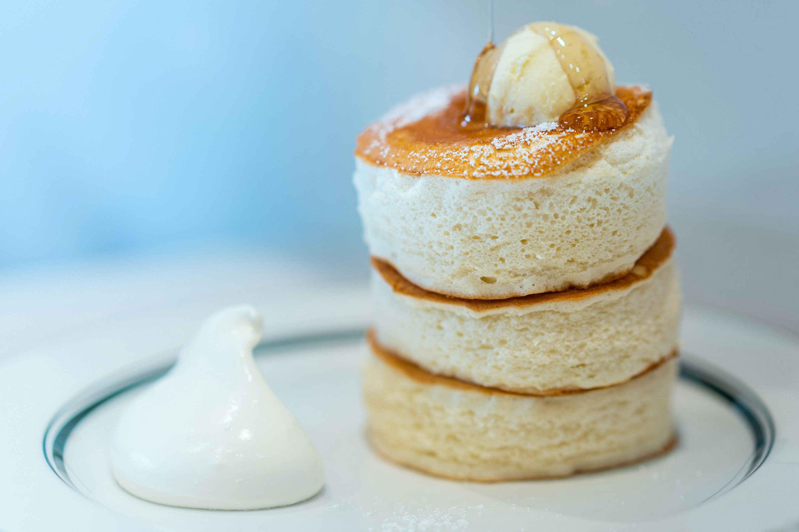

Japanese souffle pancakes

Japanese pancakes are fluffy and souffle-like. I tried them for the first time
in London and they were incredible. I am looking forward to trying to make them myself!!
Ingredients
- 1 egg yolk
- 1 tbsp sugar
- 2 tbsp milk
- 3 tbsp flour
- 1/4 tsp baking powder
- 2 large egg whites
- 1/2 tsp lemon juice
- 1.5 tbsp sugar
Steps
-
Whisk the egg yolk with 1 tbsp sugar until pale and frothy. Sift the flour and
baking powder over the yolk mixture and mix well.
- Whip the egg whites with lemon juice until frothy and pale, adding in
the sugar in bit at a time until the whites are whipped into a glossy
thick meringue that holds a peak. Be careful not to over whip.
- Take 1/3 of the whipped egg whites and whisk it into the bowl with the
yolks until completely incorporated. Add half of the remaining whites and whisk into the yolk batter, being careful not to deflate.
Transfer the egg yolk mixture to the remaining egg whites, whisk and then use a spatula to fold together.
- Heat up a large non stick frying (with a lid) pan over low heat. Very lightly brush with oil and use a paper towel
to rub it around. You want a very light film. Using an ice cream scoop or measuring cup, scoop the batter onto the pan.
Scoop the batter onto the pan, cover and cook for 4-5 minutes.
- Remove the lid and add some more batter on top of each pancake. Cover and continue to cook for 4-5 more minutes.
Lift the lid and use a spatula to gently peek under the pancake.
- If you still have any batter left, pile it on top of the pancakes and then gently flip. Cover and cook for 5-6 minutes.
Recipe taken from
i am a food blog
Home